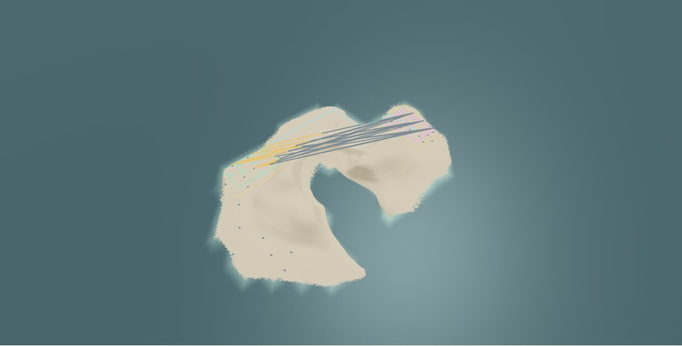

New Lab worlds allow an exposed rival. Natural compartments, foundation limits, separation and walking access still govern placement. Discovery fog will be added separately.
Method and limits · Five-seed measurements · Browser evidence · Environment Lab
| Seed | Selected pair | Natural compartments | Center distance (m) | Neutral gap (m) | Landing route (m) | Exposed / sampled rays |
|---|---|---|---|---|---|---|
| 18 | site-1 → site-2 | compartment-9 / compartment-3 | 313.2 | 220.2 | 764 | 5 / 1575 |
| 42 | site-2 → site-3 | compartment-8 / compartment-2 | 350.0 | 227.8 | 898 | 0 / 2304 |
| 1983 | site-1 → site-3 | compartment-2 / compartment-5 | 522.4 | 434.6 | 868 | 0 / 1440 |
| 7 | site-1 → site-2 | compartment-1 / compartment-2 | 177.2 | 82.8 | 270 | 180 / 1224 |
| 256 | site-1 → site-2 | compartment-1 / compartment-4 | 390.0 | 272.1 | 586 | 64 / 1620 |
Green: player. Pink: rival reserve. Gold: buffer. Cyan: route. Orange: blocked sightlines. Red: exposed sightlines. Only a subset of rays is drawn; all are measured.

Five deterministic save/load checks passed. Touch generation, legacy import and current import passed in tablet emulation. Earlier worlds retain their stored rules and terrain.